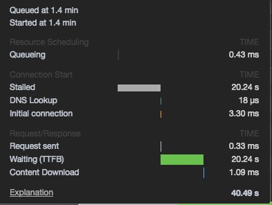

问题出现
开发反馈错误时间过长
发现所有错误请求都被发送了两次，情况是
-
浏览器中发现只有一次请求
-
服务器上发现有两条请求日志
排查过程
首先为乐确认问题是在 nginx 转发时发生的，还是由浏览器发送的
只能使用抓包的方式进行排查，重新修改了服务器，关闭了 https
使用 wireshark 进行抓包
ip == 10.1.108.31 && ip.port = 80 && http
检查发现是由浏览器发送了两次请求
分别使用了不同浏览器测试：
- Firefox 两次
- Chrome 两次
- Safari 正常
- IE 正常
检查了请求和响应
查看 chrome 网络 waterfall

查看发现，时间显示 stalled 时有一次请求
之后 walting 时间段是重试的请求
测试了是否是 keepalive 的原因，nginx.conf设置：
keepalive_timeoute 0;
排除原因
使用了echo服务进行测试
通过测试发现，当服务器响应 421 时，浏览器会复制请求并再次请求服务器
原因
查看了 http status code 421 说明
421 Misdirected Request （RFC 7540）
该请求针对的是无法产生响应的服务器（例如因为连接重用）。
RFC 7540 Hypertext Transfer Protocol Version 2 (HTTP/2) 链接
指定说明Section
9.1.2. The 421 (Misdirected Request) Status Code
The 421 (Misdirected Request) status code indicates that the request
was directed at a server that is not able to produce a response.
This can be sent by a server that is not configured to produce
responses for the combination of scheme and authority that are
included in the request URI.
Clients receiving a 421 (Misdirected Request) response from a server
MAY retry the request -- whether the request method is idempotent or
not -- over a different connection. This is possible if a connection
is reused (Section 9.1.1) or if an alternative service is selected
[ALT-SVC].
This status code MUST NOT be generated by proxies.
A 421 response is cacheable by default, i.e., unless otherwise
indicated by the method definition or explicit cache controls (see
Section 4.2.2 of [RFC7234]).
确定原因
http2 中定义了 421 错误
421 错误用于在 http2 中，在 http2 复用连接时，发现连接到的服务器不正确，则会由服务器返回响应码 421，客户端收到后会重新建立连接并且发送相同的请求
解决方式
使用通用的错误响应码403即可解决问题